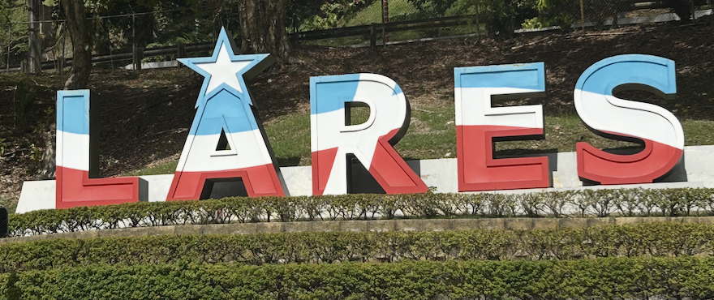

Puerto Rico's Historical Timeline
| Year | Event |
|---|---|
| Pre-1492 | Home of the Indigenous Taino people, who called the island Boriken. |
| 1493 | Christopher Columbus arrives November 19, claims the island for Spain, and renamed the island to San Juan Bautista. |
| 1508 | Spanish colonization begins, the Indigenous Taino people are enslaved. |
| 1868 | El Grito de Lares rebellion, demanding the island's independence from Spain. |
| 1898 | U.S. troops invade during the Spanish-American War, Spain surrenders the island to the U.S. under the Treaty of Paris. |
| 1917 | Puerto Ricans are now U.S. citizens under the Jones Act. |
| 1947 | Puerto Rico elects their very first governor. |
| 1952 | Puerto Rico becomes a U.S. commonwealth and changes the triangle in the flag from light blue to dark, to match the American flag. The baby blue flag is still used today to represent independence for Puerto Rico. |
| 1991 | Puerto Rico declares Spanish its only official language. |
| 2003 | U.S. government ceases use of Vieques as a site for military exercises. |

Coqui Tree Frog: Symbol of Puerto Rico
The small tree frog got its name from the sound it makes at night, "coqui". The coqui is known as a symbol of Puerto Rico as it is endemic to the island. There are coquis in Hawaii as well, but they are considered an invasive species there. In Puerto Rico, they are the most beloved animal on the island. Once the sun begins to set, you begin to hear the coqui singing. It is a beautiful sound that many Puerto Ricans who moved to the United States miss. Although some tourists may find it annoying, please do not harm these small animals or spray them with anything that can kill them. This island is their home, please respect that.